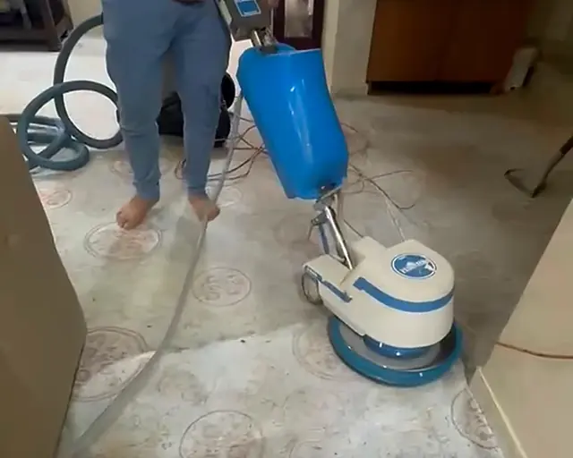
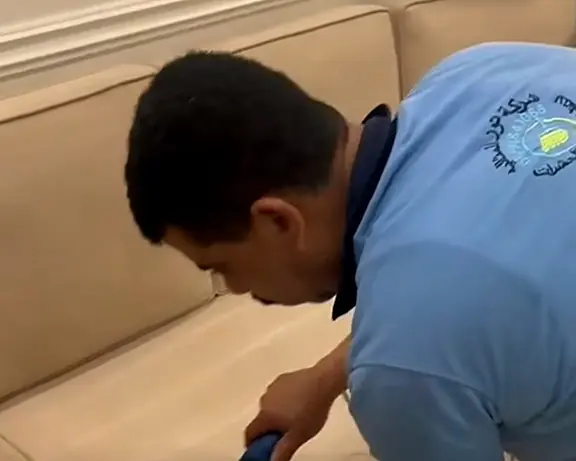
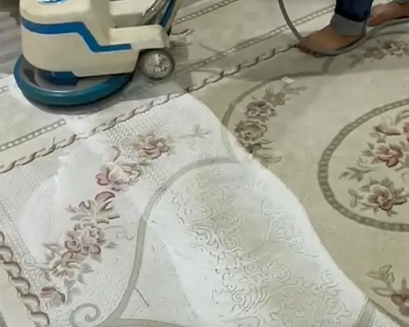
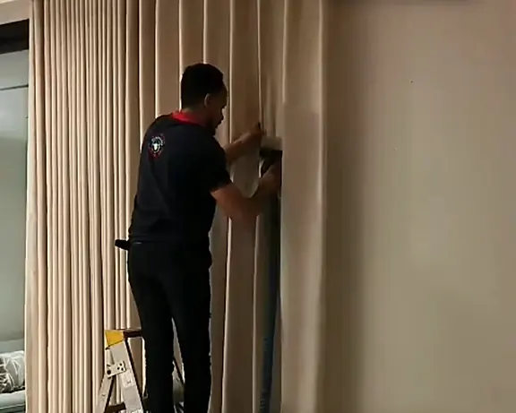
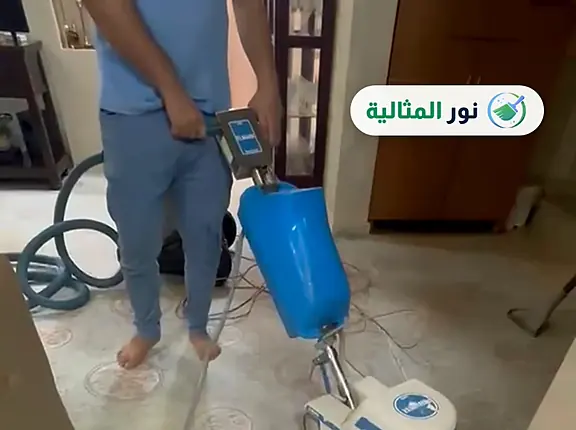

تنظيف كنب وسجاد ومنازل بالدمام والخبر والقطيف والجبيل
فريق نور المثالية يجيك البيت: ينظف الكنب والمجالس، ويغسل السجاد والموكيت بالمكينة، وينظف الستائر في مكانها بدون فك ولا تركيب.
- احجز باتصال أو واتساب
- 7 مدن في الشرقية
- بالمكينة داخل البيت
خدماتنا
تنظيف الكنب والمجالس

نشيل البقع والأوساخ من الكنب والمجالس وننظفها وهي في مكانها.
اسأل واتسابغسيل السجاد والموكيت

نغسل السجاد والموكيت بالمكينة ونشيل الأتربة والبقع، للشقق والفلل والمجالس.
اسأل واتسابتنظيف الستائر

ننظف الستائر وهي معلقة، بدون فك ولا تركيب.
اسأل واتسابتنظيف الفلل والشقق

ننظف الفلل والشقق الفاضية والمفروشة: المجالس والكنب والسجاد والموكيت والأرضيات.
اسأل واتساب
ليش نور المثالية؟
فريق بزي موحد
فريقنا يجيك بزي نور المثالية ومعه مكاين التنظيف.
غسيل بالمكينة
الكنب والسجاد والموكيت تنغسل بالمكينة وهي في مكانها.
الستائر بدون فك
ننظف الستائر وهي معلقة، بدون فك ولا تركيب.
طريقة الحجز
قل لنا الخدمة
اتصل أو أرسل واتساب، وقل لنا وش تبي ننظف.
أرسل صورة والحي
صوّر الكنب أو السجاد، وأرسل الصورة مع اسم الحي.
اختر اليوم
قل لنا اليوم اللي يناسبك ونتفق على الموعد.
نجيك البيت
فريقنا يجيك بالمكاين وينظف في مكانه.
مدننا في المنطقة الشرقية
نخدمكم في هذي المدن:
- الدمام
- الخبر
- الظهران
- القطيف
- الجبيل
- صفوى
- رأس تنورة
عندك سؤال عن حيّك؟ اتصل أو أرسل واتساب.
أسئلة تتكرر
وش الخدمات اللي تقدمونها؟
تنظيف الكنب والمجالس، وغسيل السجاد والموكيت، وتنظيف الستائر والمفروشات، وتنظيف الفلل والشقق. ونقدم كمان تنظيف وتعقيم خزانات المياه ومكافحة الحشرات.
تنظفون الكنب والسجاد في البيت؟
إيه، نغسل الكنب والسجاد والموكيت بالمكينة داخل البيت.
لازم أفك الستائر؟
لا، ننظف الستائر وهي في مكانها بدون فك ولا تركيب.
كم السعر؟
أرسل لنا واتساب بالخدمة والحي وصورة للكنب أو مقاس السجاد تقريباً، ونرد عليك بالسعر.
وين تخدمون؟
الدمام والخبر والظهران والقطيف والجبيل وصفوى ورأس تنورة.